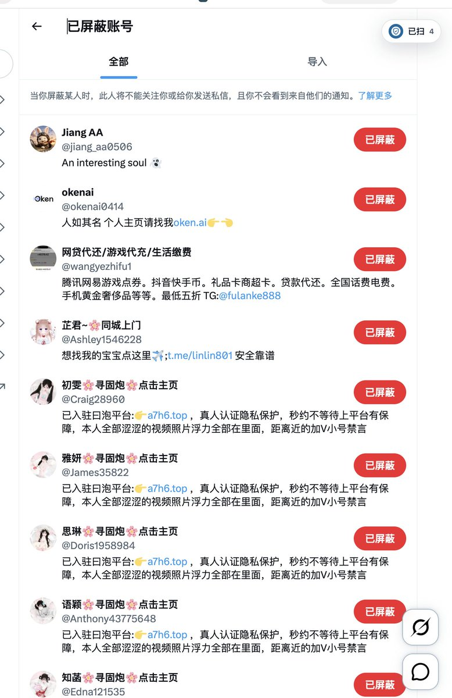

𝙉𝙚𝙡𝙤
@u7ed2x2
@CyberKanjousen

luolei
@luoleiorg
MXGA（Make X Great Again）上线 48h，已经识别出 6K+ Spam 账号，AI Agents 还在继续处理剩下的数据。
这是一个开源、免费、AI 驱动的 Chrome 插件，用来清理 X 评论区里的 spam bot。
v0.3.0 已经上架 Chrome 商店，新增「自动拉黑」设置，默认关闭，可自行开启。 https://t.co/9lQlAVPnQk
サイバー環状線
@CyberKanjousen
「批量隐藏回复」功能应当加入推特！
一个一个手动隐藏评论区 spam 回复的環状線如此认为。 https://t.co/WQz9uI08L5